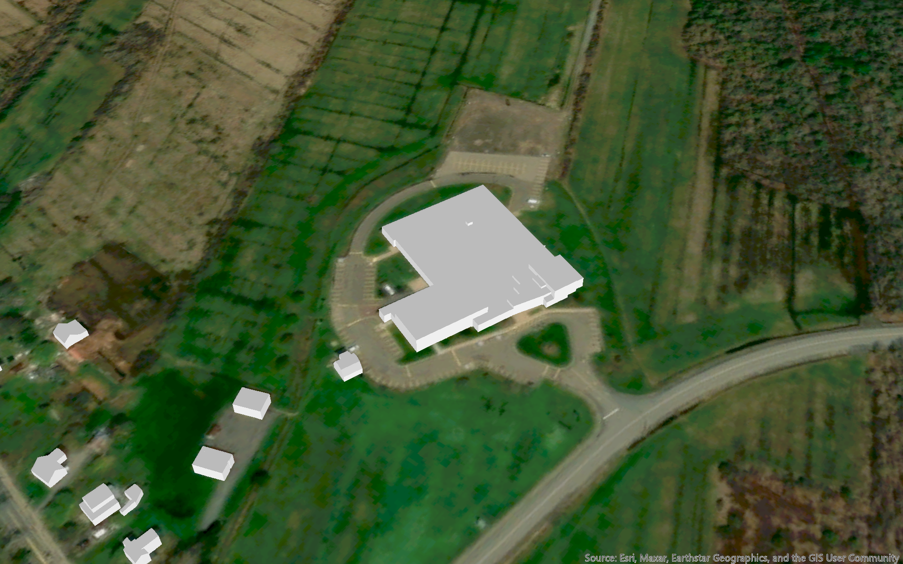

Creating 3D Building Models from LiDAR
NSCC Centre of Geographic Sciences, LiDAR Applications
March 2024
{kind=link}
(Click to enlarge)
Project Description:
Using LiDAR point cloud data from GeoNOVA, I created 3D building models for part of Lawrencetown, Nova Scotia. I used MicroStation with the TerraScan extension to classify building points, and then manually removed any misclassified points. I then used the building vectorization tools to create 3D models of the buildings from the LiDAR data. I also generated a DEM from the ground-classified points, and a DSM from all non-building points.

The LiDAR point cloud data displayed in ArcGIS Pro, symbolized by elevation.
{kind=link}
3D building model of the Centre of Geographic Sciences building.

3D building model of the Annapolis Valley Exhibition grounds.

DEM with hillshade, with 3D buildings overlaid.

DSM with hillshade, with 3D buildings overlaid.
Software Used:
- Bentley MicroStation
- Terrasolid TerraScan
- Esri ArcGIS Pro
Data Sources:
- GeoNOVA: LiDAR data
- Esri: Basemap and imagery